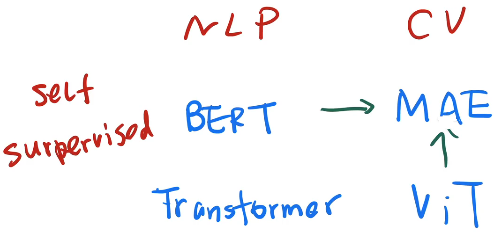

论文精读 MAE
8.MAE
Masked Autoencoders Are Scalable Vision Learners
MAE：CV版的BERT
- 论文链接：https://arxiv.org/pdf/2111.06377.pdf
- 论文代码：https://github.com/facebookresearch/mae
- 李沐讲解：MAE 论文逐段精读【论文精读】_哔哩哔哩_bilibili
MAE 2021.11.11提交 arxiv
知乎 百万 view; Reddit or Twitter 讨论不多
MAE 很新 —> 如何在读比较新的文章 获取一些新的研究思路？
0.和之前精读论文的关系？
Transformer
- 一个纯基于注意力机制的编码器和解码器
- 表现比 RNN 架构好，在机器翻译任务
BERT
- 使用 一个 Transformer 编码器，拓展到更一般的 NLP 的任务
- 使用了 完型填空 的自监督的训练机制，不需要使用标号，去预测一个句子里面 不见 masked 的词 ，从而获取对文本特征抽取的能力
- BERT 极大的扩展了 Transformer 的应用，在一个大规模的、没有标号的数据上 训练出非常好的模型出来
ViT
- 将 Transformer 用到 CV 上面
- 把整个图片分割成很多 16 * 16 的小方块，每一个方块 patch 做成一个词 token，然后放进 Transformer 进行训练
- 证明：训练数据足够大 （1,000万 或者 一个亿的训练样本）的时候，Transformer 的架构 精度 优于 CNN 架构
MAE
- BERT 的一个 CV 的版本，基于 ViT ，BERT化，把整个训练拓展到没有标号的数据上面，通过完型填空来获取图片的一个理解
- MAE不是第一个将 BERT 拓展到 CV 上；但MAE 很有可能 未来影响最大
- BERT 加速了 Transformer 架构 在 NLP 的应用
- MAE 加速 Transformer 在 CV 上的应用

1.标题 + 作者
1.1 标题
Masked Autoencoders Are Scalable Vision Learners
Masked Autoencoders 带掩码的自编码器 是可扩展的视觉学习器 scalable vision learners
scalable：可扩展的，模型比较大
efficient：算法特别快
vision learners：≠ classifier，一个 backbone 的模型
masked：来源于 BERT
- BERT 是 masked language model，带掩码的语言模型；完形填空
- 每次挖掉一些东西，然后去预测挖掉的东西
Auto-encoder：
- auto “自”，ML模型 auto 自模型；i.e., 自回归模型
- 标号 y 和 样本 x 来自 同一个东西；语言模型中，每一次用前面那些词，去预测接下来的一个词；在另外一个样本里面，我们这个预测的词也是标号，也是成为另外一个样本的 x 本身
- 样本 x 和 标号 y 来自于同样的句子里面的词 —> auto
- NLP 里，语言模型是一大类，有没有 auto 大家都理解；Transformer、BERT 用的是 encoder，加不加 auto 大家都觉得没问题
- 但在CV 里 auto 自任务很少，因为图片（像素）的标号很少来自于图片本身，图片的标号更多是文本；encoder-decoder 在图片里用得很多，加 auto 在 encoder之前，MAE 的图片标号是图片本身，区分于其它工作
1.2 标题模板
强有力的句式：文章的结论总结成一句话，XX 是 好 XX，结论放在 title 里，句式相对客观
i.e., GPT 系列 3篇文章
- GPT1： Improving Language Understanding by Generative Pre-Training (Generative Pre-Train Model 就是GPT模型的名字由来）
- GPT2: Language Models are Unsupervised Multitask Learners
- GPT3: Language Models are Few-Shot Learners
Example：
我的手写笔是世界上 最好用来做笔记的笔 ❌
手写笔是一个做笔记很好的工具 ✔
- 虽然手写笔是我第一个发明的
- 从读者角度讲述，手写笔为什么它是一个好东西？
1.3作者
FAIR
一作：Kaiming 恺明 ResNet 一作 + Project lead （从公司拿资源做项目、管理者；不是一般最后的大老板）
*：equal technial contribution
最后两位作者：CV 物体检测的大佬
2.摘要
扩展 title MAE
Masked Autoencoders Are Scalable Vision Learners —> Masked AutoEncoders are scalable self-supervised learners for computer vision.
MAE 简单
随机盖住图片里的一些块(patch, image 的一个块)，再重构 缺失的像素。
- 思想来自于 BERT 带掩码的语言模型
- 这里不是 masked 词，而是图片的一个块 image，重构这个缺失块里面的所有像素
**2个 **core designs
（1）asymmetric encoder-decoder architecture
- 虽然 MAE 说自己是 masked autoencoder；任何一个模型都有一个编码器解码器；BERT 预测相对简单， 解码器：最后的一个全连接输出层
- MAE 预测一个块里面的所有像素
- MAE 的编码器 只关注 可见的 patches，节省计算时间
- 如果 一个 patch 被丢掉了，编码器不会对它进行编码
- MAE a lightweight decoder 重构原始的像素
（2）MASK部分块，做自监督学习
遮住大量的块 (i.e., 75%) 重构像素是一个非显然 nontrivial and meaningful 有意义的 self-supervisory task 自监督任务
- 如果只遮住几块的话，插值法就可以得到缺失的像素，
- 遮住一大半的块，迫使模型学习更好的表征
更有效训练模型
asymmetric encoder-decoder + 75% masked —> train large models efficiently and effectively
- 大：比较有挑战的任务，不是求显然的解 nontrivial
- 块：不看遮住的块，训练量是 1 / 4，加速 3 倍 or 以上
效果
（1） ViT-Huge 模型 在 ImageNet-1K
最简单的 a vanilla ViT-Huge 模型 在 ImageNet-1K 87.8% 准确率
- ViT 的自监督学习，效果不那么好，所以没怎么展开
- ViT 的作者认为还是需要 有标号的模型、用更大的训练集，效果更好
- MAE 使用小数据集 ImageNet-1K 100w 图片，self-supervise 效果很好
（2）迁移学习效果
MAE 主要用来做 迁移学习，在别的任务上表现好
shows promising scaling behavior
3.关键图
3.1 MAE结构图
CV 最重要的一张图就是放在第一页的右上角
预训练流程：input —> patches —> masked —> unmasked patches in encoder —> unmasked + masked 按位置排列 进 decoder —> decoder 重构 masked patches 的像素
- patches + masked：一张红色鸟图片进来，切成 patches，masked 块 (3/4) 是 灰色的。
- unmasked patches，encoder：没有 masked (1 / 4) 的块 进入 encoder (ViT)，得到每一块的特征（蓝色）。
- encoder 的输出 和 masked tokens 按照在图片中的原始位置排列成一长条向量 （包含位置信息）。
- 长条向量 进入 decoder，解码器尝试重构缺失的像素信息，还原原始图片
encoder 比 decoder 高：计算量主要来自于 encoder，对图片的像素进行编码
优化 encoder by 编码器只用处理 unmasked patches，i.e., 一张图里 1/4 的像素，—> 计算量降低
- Transformer 模型计算量特别大，几倍加速也很重要。
什么情况不需要解码器？ 用 MAE 做一个 CV 的任务，只需要用编码器。一张图片进来，不需要做掩码，直接切成 patches 格子块，然后得到所有 patches 的特征表示，当成是这张图片的特征表达，用来做 CV 的任务。
3.2 测试图片
图2：ImageNet 测试集图片
三列分别是：80% masked tokens, MAE 重构的效果，ImageNet 真实图片
虽然细节有一点模糊，钟的指针、车的形状、狗、灯都还原的很好。
- 图片尺寸只有那么高，分辨率有限
Note： MAE 不一定对 所有图片的构造都那么好，图 2 是展示比较好的样例
图3：COCO
不同的数据集，效果也惊人。
**图4 **同一张图片、masked patches 的不同比例 的还原效果
95%效果惊人，蘑菇🍄、斑马🦓、车🚗、西红柿 都还原出来了。
4.结论
Simple algorithms that scale well are the core of deep learning. 简单 + 可以拓展很好的算法是 DL 的核心
simple：作者的简单是在 ViT 基础上，MAE 提出来的东西相对简单
scale well：能跑 大数据集
在NLP 领域自监督学习比较火，而在CV 里 有标号的预训练数据是主流。MAE 在 ImageNet 数据集上，通过自编码器学习到 可以媲美 有标号的 结果。
图片和语言的差别
- a word in a sentence：一个词是语义单元，包含较多语义信息
- a patch in an image：一定的语义信息，但不是一个语义的 segment，一个 patch 并不含有一个特定的物体，可能是多个物体的一小块 or 一个物体重叠的一块
- 即使图片和语言的 masked 的单元包含语义信息不同，MAE or Transformer 可以学到一个隐藏的比较好的语义表达
broader impacts
如果工作出圈，对社会的影响？
- 只用了图片本身信息学习，图片本身有 bias 的话，倾向于某一些图片 or 有一些不好的图片，可能会有负面的社会影响
- MAE 可以用来生成不存在的内容，MAE 是生成模型，生成原始的像素，和 GAN 类似，有误导大家的可能
- 如果要使用这个工作，请一定要考虑潜在的影响
5.导言
5.1 问题 & 其他领域解决方案
问题所在：深度学习飞速发展，但 CV 仍然以来百万级别、甚至更多有标注的数据
大量有标注数据是必须的吗？其它领域怎么解决的？
NLP 的自监督学习很好
- GPT、BERT 可以使用 无标注 的数据及逆行训练，得到千亿级别可学习的参数模型
- GPT 系列，一个标准的语言模型
- BERT 一个带掩码的自编码模型
CV 里已有的 maksed autoencoder 带掩码的自编码器
- denoising autoencoder，一张图片里加入很多噪音，通过去噪来学习对这张图片的理解
- 最近也有很多工作将 BERT 应用于 CV
但，作者认为 BERT 在 CV 领域的应用落后于 NLP。
5.2 什么使得带掩码的自编码器模型在 CV 和 NLP 处理上的不一样呢
What makes masked autoencoding different between vision and language？
（1）CV 使用 CNN，卷积窗口不好将 mask 放进去
archtectural gap has been addressed by ViT
- CNN 在一张图片上，使用一个卷积窗口、不断地平滑，来汇聚一些像素上面的信息 + 模式识别
- Transformer 的一个 mask 对应的是一个特定的词，会一直保留，和别的词区分开来
- 卷积上做掩码？ 图片的一块盖住 by 像素替换成一个特定的值，卷积窗口扫过来、扫过去时，无法区分边界，无法保持 mask 的特殊性，无法拎出来 mask；最后从掩码信息很难还原出来
- 卷积不好加入位置编码？ 不那么充分。Transformer 需要位置编码：attention 机制没有位置信息；卷积自带位置信息，不断平移时，不需要加入位置信息
（2）语言和图片的信息密度不同
NLP 的一个词是一个语义的实体，一个词在字典里有很长的解释；一句话去掉几个词，任务很难，i.e., 完形填空 —> BERT 的 mask 比例不能过高
CV 的图片去掉一个块，通过对邻居的像素值进行插值还原。怎么让任务不那么 trivial 呢？
- 随机去掉很高比例的块，极大降低图片的冗余性
- 这一块的周边块都被去掉了，这一块和很远的块的关系不那么冗余
- nontrivial 任务，使 模型去看 一张图片的 holistic 全局信息，而不仅关注局部
（3）The autoencoder’s decoder
CV 还原图片的原始像素：低层次的表示
NLP 还原句子里的词：语义层次更高，i.e., BERT 的一个全连接层还原词
图片分类、目标检测的 decoder：一个全连接层
语义分割（像素级别的输出）：一个全连接层不够，很有可能使用一个转置的卷积神经网络、来做一个比较大解码器。
5.3 MAE 的想法
随机遮住大量的块，然后去重构这些被遮住的像素信息，让它使用一个非对称的编码器和解码器的机制。
非对称：编码器和解码器看到的东西不一样
- 编码器只看到可见块
- 解码器拿到编码器的输出之后，重构 masked patches
非对称的原因：大量 masked 块；编码器只看可见块，极大降低计算开销、减少内存消耗
5.4实验结果
MAE预训练，只使用 ImageNet-1K 100w 无标号数据，ViT-Large/-Huge 达到 ViT 需要 100倍于 ImageNet-1K 的数据 的效果。
迁移学习效果也很好，预训练的模型在 目标检测、实例分割、语义分割 的效果都很好。
和 NLP 类似的效果：在大量的没有标号的数据上，通过自监督学习训练出来模型，迁移学习效果不错
5.5 导言总结
2页，图片 + 使用了 问题 - 回答问题 - 引出想法 的写法
更本质的问题？
把 BERT 从 NLP 用到 CV 有什么问题？
MAE 算法为什么要设计成这样？
- ViT 解决 图片中的 mask
- 大量随机 masked 块，降低图片冗余度
- 非对称的自编码器-解码器
写作建议：
讲清楚，你为什么要这么做？你对这个问题的动机？
- 没有动机 就是技术报告了，i.e. AlexNet
6.相关工作
6.1带掩码的语言模型：
BERT, GPT
6.2自编码器在 CV 的应用
- MAE 也是一种形式的 带去噪的自编码
- masked patch 在这一个图片块里面加了很多噪声
- 和 传统的 DAE(Denoising autoencoder) 是很不一样的
- MAE 基于 ViT、transformer 架构
6.3带掩码的自编码器在 CV 的应用
- iGPT，GPT 在 image 的应用
- ViT 最后一段，怎么用 BERT 方式训练模型
- BEiT，BERT 在 image 上的应用
- 给每一个 patch 离散的标号，更像 BERT
MAE 直接重构 原始的像素信息
6.4 self-supervised learning
最近火 的 contrastive learning，使用数据增强
MAE 不需要数据增强（实验部分有讲）
相关工作总结：4个角度的对比，MAE 和它们都不同，但是没有特别讲 MAE 和每一个不一样的地方在哪里。
7.MAE模型
7.1 MAE总体架构
MAE 是一个简单的 自编码器：看到了部分的观察的数据，用观察到的部分数据 重构 完整的原始信号。
所有自编码器的工作
- 将观察到的信号 映射到一个潜在 latent 表示里面
- 潜在表示：语义空间的一个表示
- 解码器 用 潜表示 latent 重构原始信号
MAE 的自编码器 和 经典自编码器的不同？
- asymmetric design 非对称结构
- 编码器只看 可见块
- 忽略不可见 masked 块，节省计算开销
7.2 掩码 mask
和 ViT 的一样图片 patches 化， i.e., 一张图片 九宫格分割，3 * 3，每一格 代表一个 patch，作为一个词 token。
random sampling： 随机均匀采样块保留, 剩余块用 mask 掩码盖住。
MAE 的关键技术？ 只采样少量的块，其余的块全覆盖，去掉图片 patches 之间的冗余度。—> 增加任务的复杂度
7.3 MAE 的编码器
- 就是一个 ViT， 没有任何改动，只作用于 可见块
MAE 编码器如何作用于可见块呢？
- 和 ViT 一样部分：每一个 patch 块拿出来，做一个线性投影；然后+ 位置信息 —> token
- 和 ViT 不一样部分：masked 块不进入 MAE 编码器。i.e., 随机采样概率 1 / 4， 25% 样本块进入 ViT，计算量减少
7.4 MAE 的解码器
要重构 masked 块的像素信息，需要看到 可见块（编码器对可见块的潜表示） 和 masked 块 （没有进入编码器）；通过一个共享的可以学到的向量来表示：每一个被盖住的块都表示成同样一个向量，此向量值可学习。
解码器是另外一个 transformer，需要位置信息，不然无法区分对应哪一个 掩码masked tokens
可见块的位置信息 question？
- 位置信息 要不要也对那些编码器过来的 潜在表示 也加上
- 因为可见块的潜表示其实本来已经加过一次了，那么这个地方要不要再加上一次？
解码器主要在pre-training用到；别的下游任务，解码器不需要，只需要编码器对图片编码得到潜表示 → 灵活，想用什么随便用
解码器的架构大小：相对小，计算开销不到编码器的 1 / 10
7.5 重构出原始的像素
解码器的最后一层： a linear projection
- 一个 patch 是 16 * 16 像素的话，线性层会投影到长为 256 的维度
- 再 reshape(16, 16), 还原原始像素信息
- 损失函数： MSE，像素值相减，再平方和
- 损失只作用于非可见块的损失，和 BERT 一样，可见块的图片编码器已经看到了，看到答案就不算正确率了
对预测的像素做一次 normalization，使像素均值为 0 方差为 1，数值更稳定。
7.6 简单实现
- 对每一个输入 patch 生成 a token：一个一个 patch 的线性投影 + 位置信息
- 随机采样：randomly shuffle 随机打断序列，把最后一块拿掉。从头部均匀的、没有重置的样本采样；25% 意味着 随机 shuffle， 只保留前 25%
- 解码时：append 跟以前长度一样的这些掩码的一些词源 mask tokens （一个可以学习的向量 + 位置信息），重新 unshuffle 还原到原来的顺序
- MSE 算误差时，跟原始图的 patches 对应
The decoder is applied to this full list (with positional embeddings added)。编码器处理可见块的潜表示需不需要再加位置信息？
shuffle 和 unshuffle 好处： 没有稀疏的操作，实现快，不影响 ViT 块的实现
8.实验
8.1 ImageNet 的实验
在 ImageNet-1K 100万张图片 数据集上：先做自监督的预训练（不用标号，只拿图片）；然后再在同样的数据集上做有标号的监督训练
做法：
- end to end 的微调，允许改整个模型 所有的可学习的参数；
- linear probing 允许改最后一层的线性输出层
结果：在验证集上报告 top-1 的精度，用 中心剪裁的 224*224 的图片
Baseline: ViT-Large / 16, 16 * 16。ViT-Large 比 ResNet50 要大很多，很容易 overfitting
比较的 3 种情况：
- scratch, original：76.5。 ViT 所有的内容在 ImageNet-1K上训练, 结果不稳定 200 epoches
- scratch, our impl： 82.5。加入 strong regularization 。ViT 文章说 ViT 需要很大的数据才行；但是后来发现，小一点的数据 + 合适的正则化 也是可以的。
- baseline MAE：84.9 。先使用 MAE 做预训练，再在 ImageNet 上微调 50 epoches。数据集没变化，预训练和微调都是 ImageNet
MAE 纯从图片上学到不错的信息
8.2**主要结果 **
（1）表1
a：解码器的深度，多少个 Transformer 块; end to end fine-tuning 贵一点，但效果好
- 全都 ft，深度和效果关系不大 84.x
- 只调 lin, 深度深一点好
b：解码器的宽度，每一个 token 表示成一个多长的向量，512 比较好。
c：编码器要不要加入被盖住的 masked 块：
- 不加很好，精度高、计算量更少
- 非对称的架构 精度好、性能好
d：重构的目标
- 每个像素的MSE
- 每个像素的MSE + normalization 均值为0 方差为 1 效果好
- PCA 做一次降维
- dVAE: BEiT 的做法，通过 ViT 把每一个块映射到一个离散的 token，像 BERT 一样的去做预测
e：怎么样做数据增强，MAE 对数据增强不敏感
- 什么都不做
- 固定大小的裁剪
- 随机大小的裁剪
- 裁剪 + 颜色变化
f：怎么采样 被盖住的块
- 随机采样 最简单最好
- 按一块块的采样 50 %
- 按一块块的采样 75 %
- 网格采样
（2）表1 主结果内容的展开图
使用不同的掩码率的时候的效果：10%的块被遮住： 83.2%；超过 40%的块被遮住：精度大幅提升
只调最后一层：更敏感
（3）表2 训练时间
- ViT-Large + 解码器只使用一层 Transformer 的块：84.8% 精度不错，耗时最少
- 带掩码的块 + 大的解码器，加速 3.7倍
- ViT huge 加速也比较多
绝对时间：128个 TPU v3的 core， tensorflow 实现；训练时间是10个小时 和 大概是一天多，可以忍受。
（4）图 6 表示的是不同的掩码采样策略的区别
- 随机采样效果好
- 尽量的按照一块一块的来切
- 按照格点来切
（5）图 7 预训练的轮数和微调的精度的对比
ImageNet-1K 上训练个 1,000 个数据轮，精度有提升，在一直训练一直学习，过拟合也没那么多严重，因为1,000轮是非常非常多的
- 一般在 ImageNet 上训练， 200轮 enough
8.3 与之前工作相比
(1）表3：跟前面结果比 MAE 效果是最好的
（2）图8：跟 ViT 里面的结果比
- 最上面的虚线：ViT 在 JFT 3亿标号的图片数据集合的效果
- 排第二的线：只使用 ImageNet-1K 也就是1/300数据的效果
- 两根线很接近，不能说这是一个很公平的比较
- JFT数据集包括的类数远远大于 ImageNet
- 它们很多是一些 顾我自己 care 的一些目标，但是 ImageNet很多都是一些猫猫狗狗的图片
- 测试集也是 ImageNet，JFK 它多了很多很多 可能跟你那些标号不那么一样的图片
把验证集换到一个 不那么跟 ImageNet 相像的数据集上，可能这个差距会大一点，主要比较的是算法，而不是数据集
8.4调编码器所有层的参数和最后一层的参数效果差距大
到底调多少层：
- 少，快，精度差
- 多，慢，精度好
- x轴表示多少个Transformer块被调
- y轴表示精度
调 4 - 5 层比较好
- 底层不调：底层学到的东西稍微是比较低层次一点，你可以换一个任务也不需要变太多
- 上面那些层，跟你的任务相关，要调
8.5迁移学习实验结果
COCO 的目标检测和分割
- MAE 做它的主干网络 效果最好
- 跟之前的 ViT 和 BEiT 比
重构像素的比较
- 像 BEiT 那样重构 or 用 dVAE 学出来的标号比 差别不大
- 重构原始的像素 简单、好
9.评论
9.1 算法
MAE 算法不难
- 利用 ViT 来做跟 BERT 一样的自监督学习
- ViT 文章已经做了这个事情了
MAE 在 ViT 的基础提升点
- 需要盖住更多的块，降低剩余块之间的冗余度，任务变得复杂一些
- 使用一个 Tranformer 架构的解码器，直接还原原始的像素信息，使得整个流程更加简单一点
- 加上在 ViT 工作之后的各种技术，训练更鲁棒
以上三点 MAE 使得在 ImageNet-1K 这个数据集上使用自监督训练的效果超过了之前的工作
9.2写作：简单，故事性好
导言：为什么 MAE 这么做
非常详细的实验数据：整个 MAE 里面 所有可以调的超参数 它到底是什么意思？
简单的想法、非常好的结果、详细的实验 → 一个非常高质量的工作